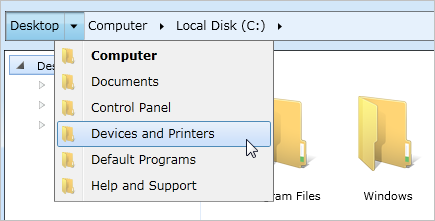
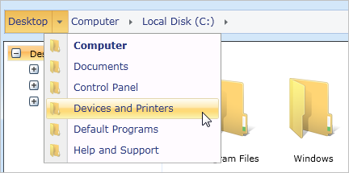
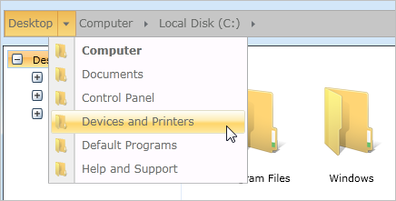
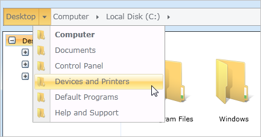
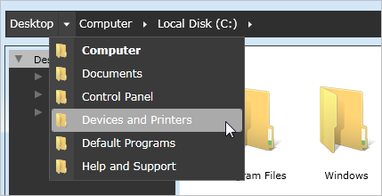
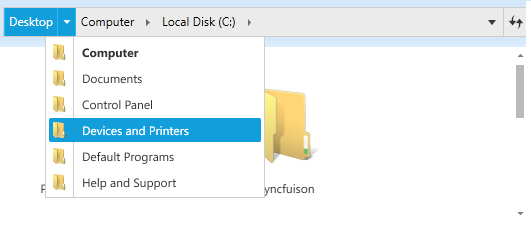

The Windows 7 theme is applied to the HierarchyNavigator control by default.
Add the following DLLs to apply the corresponding theme for Hierarchy Navigator control. SkinStorage class is used to apply a different visual style for a control, which is available in Syncfusion.Shared.WPF project.
1. Create HierarchyNavigator instance either in XAML or code behind, as shown below.
|
XAML
<syncfusion:HierarchyNavigator x:Name="hierarchyNavigator"/> |
Or
|
C#
HierarchyNavigator hierarchyNavigator = new HierarchyNavigator(); |
2. Apply Visual Style as shown below in code behind by calling the static method in SkinStorage class in Syncfusion.Shared.WPF.
Window7
|
C#
SkinStorage.SetVisualStyle(this, "Default"); |

Figure 580: Windows7 Skin
Office2007Blue
|
C#
SkinStorage.SetVisualStyle(this, "Office2007Blue"); |

Figure 581: Office2007Blue Skin
Office2007Black
|
C#
SkinStorage.SetVisualStyle(this, "Office2007Black"); |

Figure 582: Office2007Black Skin
Office2007Silver
|
C#
SkinStorage.SetVisualStyle(this, "Office2007Silver"); |

Figure 583: Office2007Silver Skin
Expression Blend
|
C#
SkinStorage.SetVisualStyle(this, "Blend"); |

Figure 584: Expression Blend Skin
Metro Theme
|
C#
SkinStorage.SetVisualStyle(this, Metro"); |

Figure 585: Metro Skin